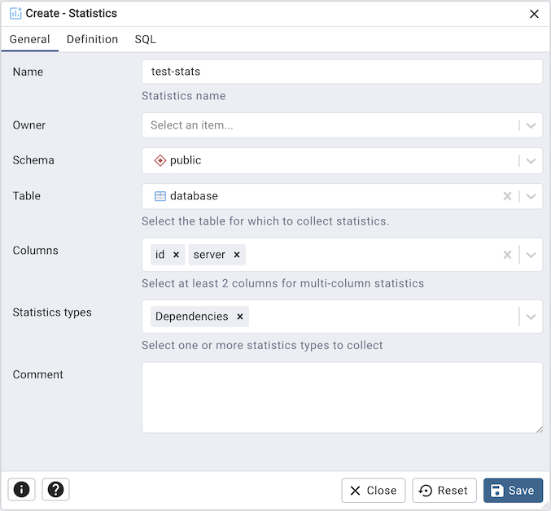
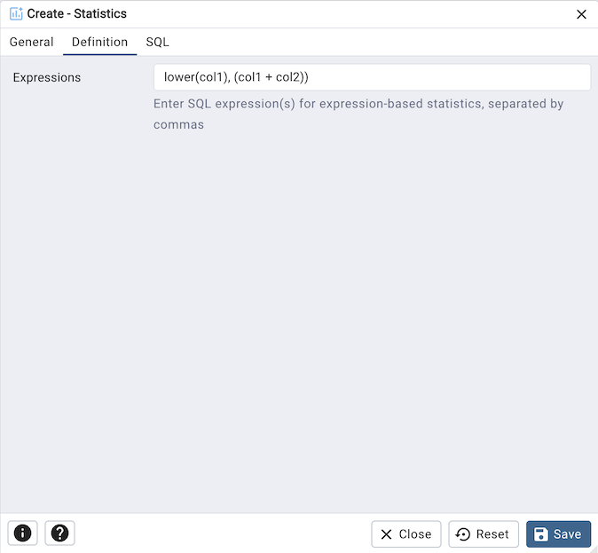
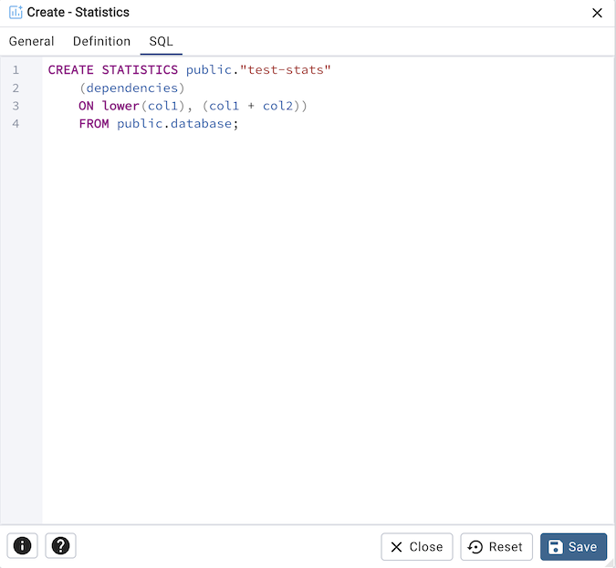

Statistics Dialog¶
Use the Statistics dialog to define extended statistics on one or more columns (or expressions) of a table. Extended statistics let PostgreSQL collect correlation data across columns that can significantly improve query-plan estimates for queries that filter or group by multiple columns.
PostgreSQL introduced CREATE STATISTICS in PostgreSQL 10, and added
expression statistics in PostgreSQL 14. This dialog is available for
PostgreSQL 14 and later, which covers all currently supported PostgreSQL
versions.
The Statistics dialog organizes options across the General and Definition tabs. The SQL tab displays the SQL command generated by your selections.

Use the fields in the General tab to describe the statistics object:
Use the Name field to enter a descriptive name. On PostgreSQL 16 and later the name is optional, and the server will generate one from the table and the columns or expressions if you leave it blank.
Use the Owner field to select the role that will own the statistics object.
Use the Schema field to select the schema in which the statistics object will reside.
Use the Table field to select the table on which the statistics will be collected. The list is filtered to tables in the selected schema.
Use the Columns field to select two or more columns. Hold Ctrl (or Cmd on macOS) to select multiple columns. At least two columns are required when collecting column based statistics, although a single column is enough when it is combined with an expression.
Use the Statistics types field to choose which kinds of extended statistics to collect:
N-distinct, which estimates the number of distinct value combinations across the selected columns or expressions.
Dependencies, which detects functional dependencies between columns, improving estimates for queries with correlated
WHEREclauses.MCV (Most Common Values), which records the most common combinations of values.
If you leave the field empty, PostgreSQL collects every kind it supports. Leave it empty for statistics on a single expression, which do not accept a choice of kinds.
Use the Comment field to store an optional note about the statistics object.
Click the Definition tab to continue.

Use the Expressions field to enter one or more SQL expressions separated by commas (for example
lower(col1), (col1 + col2)). Each expression must be enclosed in parentheses unless it is a function call, and the list is passed to the server exactly as you enter it, so an expression may itself contain commas. Expressions may be given instead of columns, or alongside them when you want statistics over a mixture of the two.
When you open the dialog on an existing statistics object, the Properties
view also reports the statistics target and, for roles with access, the values
that ANALYZE has collected. Those values are read through the
pg_catalog.pg_stats_ext view, which only shows them to roles the server
allows to see them (the table’s owners, on current PostgreSQL releases), so
the Computed Statistics group is hidden when the current role lacks access.
Click the SQL tab to continue.
Your entries in the Statistics dialog generate a SQL command (see an example below). Use the SQL tab for review; revisit or switch tabs to make any changes.
Example¶
The following is an example of the SQL command generated by user selections in the Statistics dialog:

Click the Info button (i) to access online help.
Click the Save button to save work.
Click the Close button to exit without saving work.
Click the Reset button to restore configuration parameters.